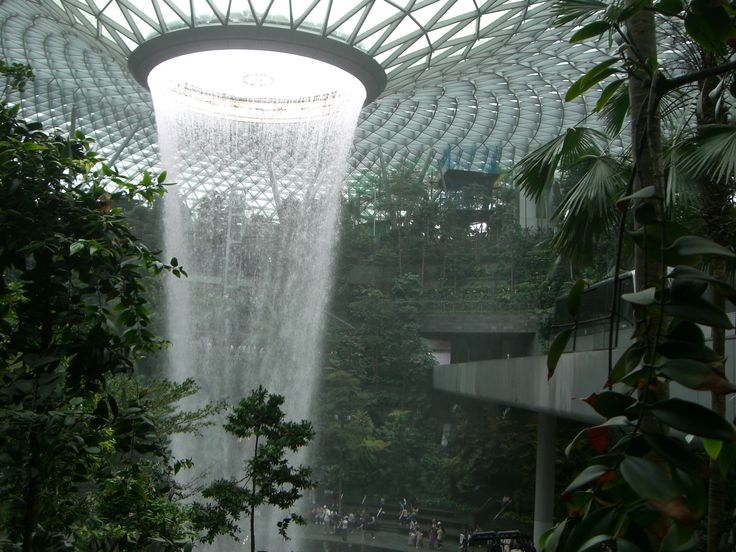
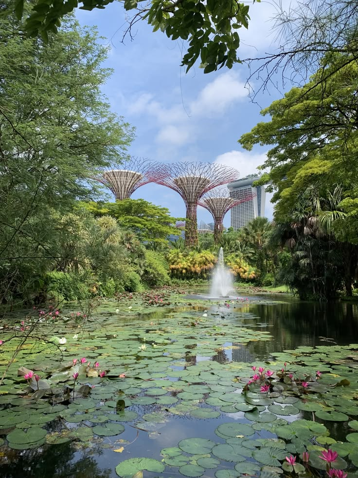
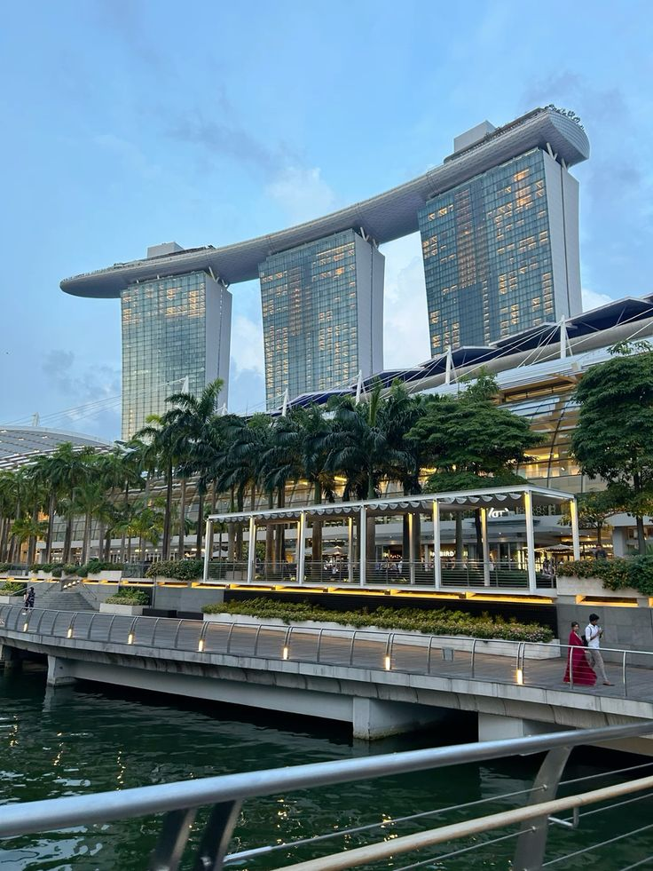
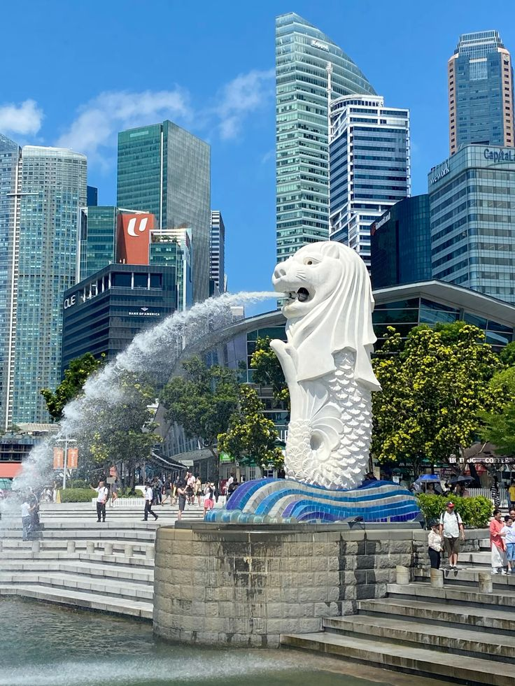
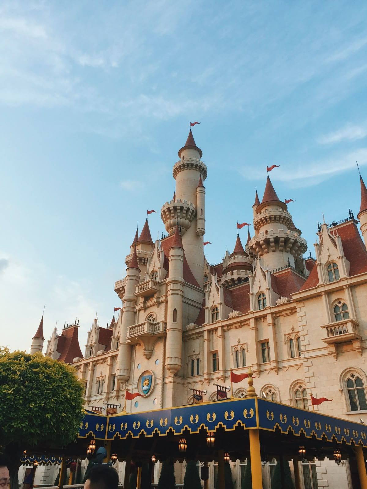
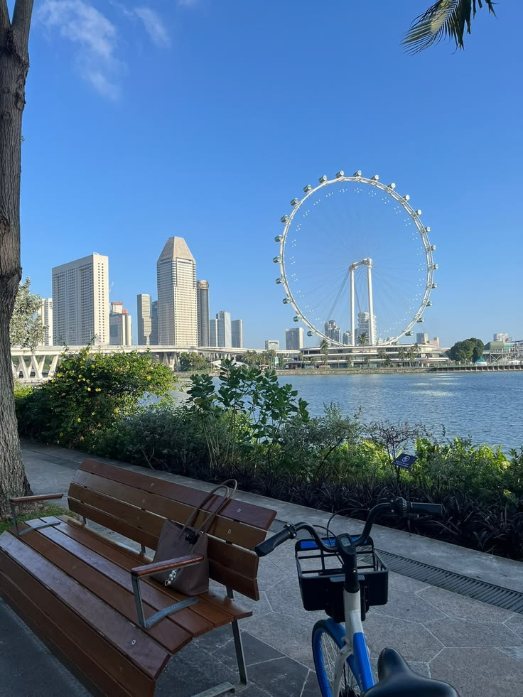

Singapore, which is its own independent country, is an island country in Southeast Asia. It is widely known for its modern global city-state, showcasing its iconic skyline, strict cleanliness, safety, and diverse food. It’s also known for their compact-sized city, often referred to by its famous nickname, "The Little Red Dot." Despite its massive global economic and financial presence, it remains one of the smallest sovereign nations in the world. The national flag features two equal horizontal sections of red above white, with a white crescent moon and five white stars in the upper left corner. Their culture is also a vibrant, multicultural mosaic blending Chinese, Malay, Indian, and Eurasian traditions.
I personally love Singapore based on my own experiences, as it is also the first ever country I’ve ever stepped foot on besides Indonesia, which is my homeland. I’ve visited this country twice, once when I was a toddler, and second one spent during the 2026 new years. The vibes of the country, especially when it’s during the night, is one of the main reasons I’d fallen in love with this country. I remember walking the streets with my mom, my brother, alongside my cousin the night before new years, and we just walked and talked, spending the best night ever. Its sight attractions don't fail to make any vacation memorable as well.
During the first trip I had to Singapore, without my cousin, I had spent it on sightseeing its many beautiful attractions with my family. Such as, Gardens by the Bay, Universal Studios Singapore, and of course, its most iconic airport, the Changi Airport. The country’s modern vibes just feel so unreal, especially of how clean the country generally is, not shocking that it is one of the cleanest cities in the world. Even as a young child during that first visit, I remember being completely mesmerized by the jewel-shaped structures and the endless indoor greenery. Returning years later for the 2026 New Year's celebration only deepened my love for the country.
I would personally highly recommend this country as a vacation with family as it has so many attractions and experiences just perfect for it. Ranging from kid-friendly fun experiences like Universal Studios Singapore, to adult calming, sightseeing, freeroaming like Gardens by the Bay. Definitely a good choice to release stress after a busy pre-vacation rush. You never have to worry about safety or getting lost, which allows everyone to completely let their guard down and just enjoy being together. Whether you are navigating the city's futuristic architecture by day or simply strolling through its glowing, cooler streets at night, the atmosphere naturally forces you to slow down and live in the moment. It bridges the gap between thrilling entertainment and pure, peaceful relaxation better than almost anywhere else. For my family and me, it wasn’t just a holiday; it was a perfect escape that gave us stories we will keep telling for years, proving that even the smallest dot on the map can leave the biggest impact on your heart.